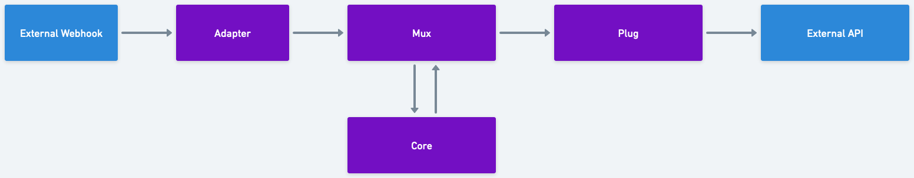

Making GraphViz look like Whimsical#
I’m fond of Whimsical look and feel, and I like how GraphViz can render nice flow charts from simple textual description.
So here’s my attempt to make a simple GraphViz digraph render as if it was built in Whimsical.
digraph {
edge [color="#808080", arrowsize=.6, penwidth=3, minlen=3];
node [shape=box, fontname="DIN Next, sans-serif", style="rounded,filled", penwidth=5, fillcolor="#8010d0", color="#f0f0f0", fontcolor=white, margin="0.35" fontweight=bold]
bgcolor="#f0f0f0";
{rank=same; "External Webhook" -> "Adapter" -> Mux -> Plug -> "External API"}
Core -> Mux -> Core [minlen=1]
"Slack API", "External Webhook" [fillcolor="#4040ff"]
}
Output (auto-generated by sphinx.ext.graphviz):
![digraph services {
edge [color="#808080", arrowsize=.6, penwidth=3, minlen=3];
node [shape=box, fontname="DIN Next, sans-serif", style="rounded,filled", penwidth=5, fillcolor="#8010d0", color="#f0f0f0", fontcolor=white, margin="0.35" fontweight=bold]
bgcolor="#f0f0f0";
{rank=same; "External Webhook" -> "Adapter" -> Mux -> Plug -> "External API"}
Core -> Mux -> Core [minlen=1]
"External API", "External Webhook" [fillcolor="#4040ff"]
}](../_images/graphviz-2801d45bf8badd27525b6c2dc43ae2c07171a9fa.png)
Same flowchart rendered in Whimsical for comparison:
{kind=link}
